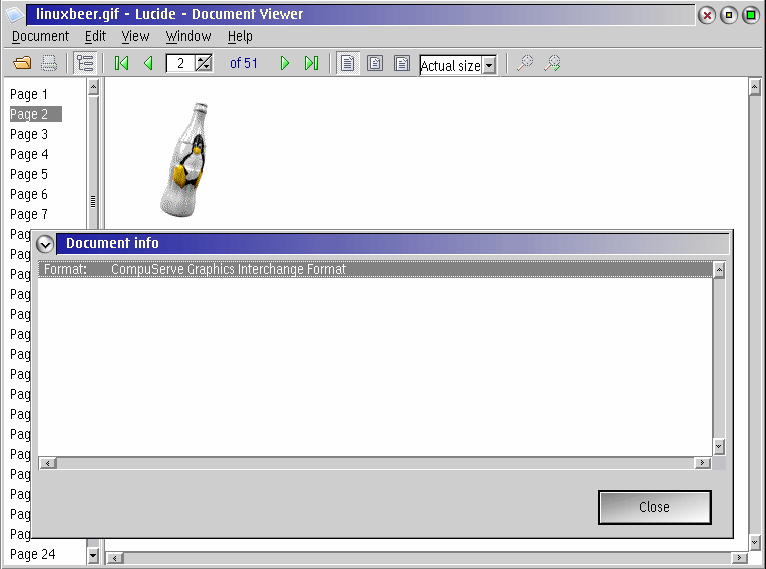

Lucide is a general purpose document viewer for eComStation. It provides a plugin interface which allows developers to integrate support for all kinds of document files. For details about Lucide please visit the Lucide project homepage.
Please note that Lucide is still in beta status and thus also the GBM plugin might not work in all cases as expected.
The GBM plugin for Lucide is such an extension that provides access to all GBM supported bitmap formats. The following Lucide features are currently supported by the plugin:
For being able to use it, the following additional files are required:
Note:
GBM.DLL version 1.41 must not be used as it contains a compiler
optimization issue that reduces stability. When used together
with the GBM plugin for Lucide, Lucide will crash when opening
JPEG bitmaps. Please upgrade to GBM.DLL version 1.42 or higher.
Simply copy lugbm.dll into the Lucide installation directory.
Please check the requirements listed for gbm.dll above.
Copy gbm.dll either into the Lucide installation directory beside
lugbm.dll or put it somewhere in your LIBPATH (defined in CONFIG.SYS).
The last option is recommended if gbm.dll is also required by
other programs.
Copyright (C) 2006 Heiko Nitzsche
This software is provided 'as-is', without any express or implied warranty. In no event will the author be held liable for any damages arising from the use of this software.
Permission is granted to anyone to use this software for any purpose, including commercial applications, and to alter it and redistribute it freely, subject to the following restrictions:
Lucide window showing a multipage GIF by using the GBM plugin:
